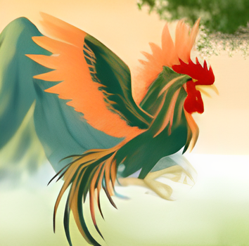

Ciung Wanara adalah salah satu legenda paling terkenal dari tanah Pasundan yang menceritakan tentang dua
pangeran kembar, perebutan takhta, dan kutukan yang mengubah salah satunya menjadi burung. Legenda ini
dianggap sebagai asal-usul leluhur Prabu Siliwangi dan mengandung nilai-nilai kecerdikan melawan
kekuatan fisik.
Kelahiran Kembar dan Pengasingan
Kisah dimulai ketika Permaisuri Galuh melahirkan dua anak kembar - Ciung Wanara dan Hariang Banga.
Karena ramalan buruk, Ciung Wanara dibuang ke hutan dalam peti bersama telur ayam dan seekor anjing.
Peti itu hanyut di sungai dan ditemukan oleh seorang kakek pengumpul kayu.
"Barang siapa menemukan peti ini dan merawat anak di dalamnya, akan kuberkahi keturunanmu tujuh
turunan"
Ciung Wanara tumbuh besar bersama kakek angkatnya. Suatu hari, ketika sedang bermain, dia secara tidak
sengaja memakan telur ayam yang ternyata berisi kutukan. Seketika itu, tubuhnya berubah menjadi seekor
burung ciung (sejenis burung pemakan serangga).
Kembali ke Kerajaan
Meski berwujud burung, Ciung Wanara tetap memiliki kecerdasan manusia. Dia mengetahui asal-usulnya dan
berniat merebut takhta kerajaan dari saudara kembarnya, Hariang Banga, yang telah menjadi raja yang
lalim.

Ciung Wanara dalam wujud burung dengan kecerdasan manusia

Ciung Wanara mengajak Hariang Banga bermain untuk merebut takhta
Dengan kecerdikannya, Ciung Wanara mengajak Hariang Banga bermain "adu domba" - siapa yang bisa membuat
domba melompat lebih tinggi akan menjadi raja. Ciung Wanara yang memahami sifat domba berhasil
memenangkan permainan dan merebut takhta kerajaan.
Kaitan dengan Prabu Siliwangi
Dalam beberapa versi cerita, Ciung Wanara dianggap sebagai leluhur langsung Prabu Siliwangi. Kecerdikan
dan kebijaksanaan yang dimiliki Ciung Wanara diwariskan kepada keturunannya, termasuk Prabu Siliwangi
yang terkenal dengan kepemimpinan bijaknya.
Seperti Mundinglaya Dikusumah yang harus menyelesaikan tugas berat untuk membuktikan diri, Ciung Wanara
juga harus melalui ujian berat untuk mendapatkan kembali kerajaannya. Kedua cerita ini menekankan
pentingnya kecerdasan dan ketekunan.
Fakta Menarik
Nama "Ciung Wanara" berasal dari kata "Ciung" (nama burung) dan "Wanara" (manusia dalam
bahasa Sansekerta).
Ini melambangkan dualitasnya sebagai manusia yang terkurung dalam tubuh burung.
Persamaan dengan Sangkuriang
Seperti Sangkuriang yang tidak mengenali ibunya sendiri, Ciung Wanara juga tidak mengenali saudara
kembarnya saat pertama kali bertemu. Kedua cerita ini mengandung tema pengenalan identitas dan
konsekuensi dari perbuatan masa lalu.
Sementara Sangkuriang gagal karena emosinya, Ciung Wanara berhasil karena kecerdikannya. Kedua cerita
ini saling melengkapi dalam menunjukkan dua sisi manusia - emosi versus akal budi.

Momen ketika Ciung Wanara akhirnya kembali ke wujud manusia
Nilai Moral dan Warisan
-
Kecerdikan dan kebijaksanaan lebih penting daripada kekuatan
fisik
-
Takdir bisa diubah dengan usaha dan kecerdasan
-
Kekuasaan yang lalim akan tumbang oleh kecerdasan rakyat kecil
-
Penampilan luar tidak menentukan nilai seseorang
-
Persaudaraan dan pengampunan adalah nilai luhur
Legenda yang Menginspirasi
Ciung Wanara bukan sekadar cerita rakyat, tetapi telah menjadi simbol perjuangan melawan
ketidakadilan dengan kecerdikan. Kisah ini menginspirasi banyak versi seni pertunjukan Sunda, dari
wayang golek hingga drama modern.
Sebagai leluhur Prabu Siliwangi, nilai-nilai yang dibawa Ciung Wanara tentang kepemimpinan bijak
terus hidup dalam budaya Sunda. Hingga kini, nama Ciung Wanara diabadikan dalam berbagai tempat di
Jawa Barat sebagai penghormatan terhadap legenda ini.